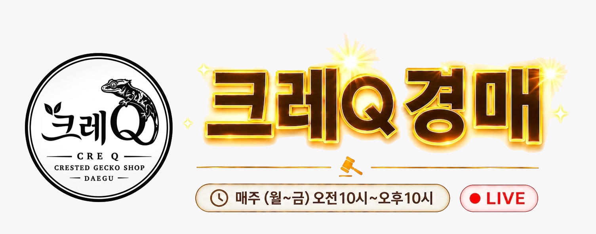
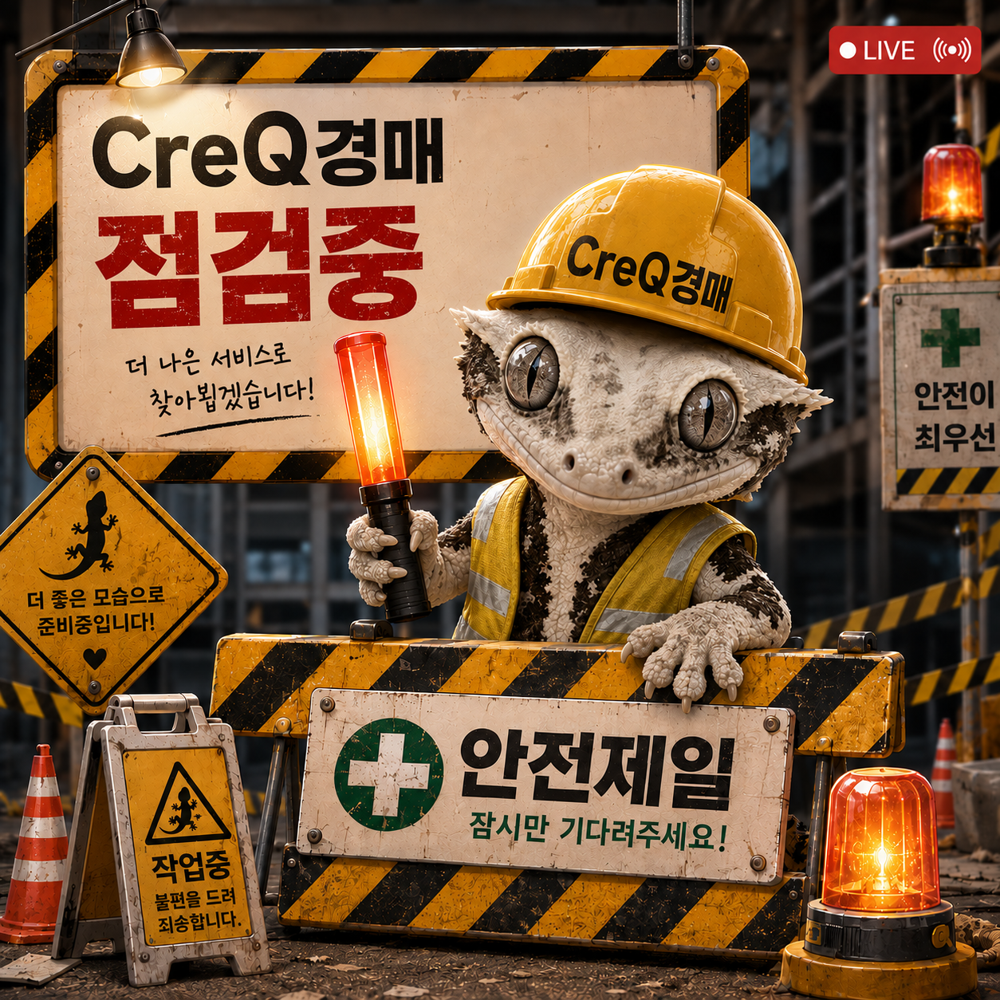

🦎 크레스티드 게코 백과사전에 오신 것을 환영합니다!
궁금한 주제를 눌러서 사육에 필요한 핵심 꿀팁과 추천 정보를 확인하세요. 크레Q가 건강한 브리딩을 응원합니다.
ℹ️ 본 가이드는 국내외 사육 정보를 바탕으로 정리한 참고 자료이며, 개체 상태에 따라 전문가(파충류 수의사)의 소견이 우선합니다.



오픈 준비중입니다
5초 후 CREQ 사이트로 이동합니다